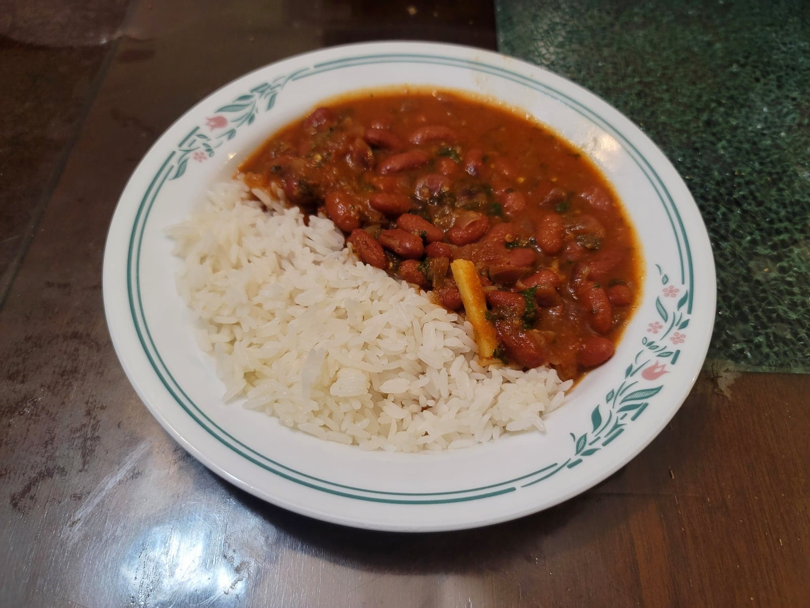

Rajma Masala

Ingredients:
- 1 cup Dry red kidney beans OR 2 15 oz cans Red kidney beans
- 2 tbsp Ghee
- Optional: 1 Green chili, chopped
- 1 1/2 tsp Ginger garlic paste OR 3/4 tsp grated Ginger + 3/4 tsp grated Garlic
- 1 Red onion, diced
- 1/2 tsp Salt
- 1 tsp Kashmiri chili powder
- 3/4 tsp Garam masala
- 2 tsp Coriander
- 1 tsp Cumin
- 1/4 tsp Turmeric
- 2 large Tomatoes, puréed
- 1/2 - 1 tbsp Kasuri methi
- 2 tbsp Cilantro, chopped
- Optional: 1 inch Ginger, julienned
- Optional: 2-3 tbsp Heavy cream
Instructions:
- If using dry beans, soak them in large bowl of water, uncovered, the night prior. Then drain from the water and cook with either an pressure cooker or in a pot with new water.
- Heat the ghee in a pot over medium heat. Add in the garlic ginger paste and green chili and sauté for about 1 minute. Add in the onion and salt and sauté until translucent and starting to caramelize, 7-11 minutes.
- Stir in the spices and sauté until fragrant, 30-60 seconds. Then add the tomatoes. Bring to a simmer over medium and let cook for 7-10 minutes, stirring often, or until thickened to preference.
- Add in the beans along with with 1/4 - 1/2 of the bean cooking liquid (just add the beans with the can liquid if using cans). Stir and let cook for about 10-15 minutes, or until thickened to preference.
- Taste and add salt as needed. Stir in the kasuri methi, cilantro, and julienned ginger and remove from heat. Serve hot and optionally garnish with heavy cream.